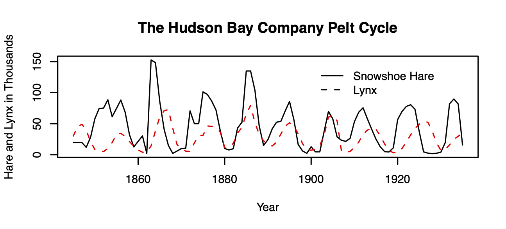
10 Consumer-resource Interactions
Consumption is fundamental to life. Organisms are at a disequilibrium with their surroundings, requiring inputs of resources to maintain themselves, grow, and reproduce. We first considered organisms from this biophysical or energetic context when we discussed foraging. Optimal foraging theory seeks to understand individual behavior of diet choice as a solution to the problem of maximizing net resource gain per unit time.
All organisms require carbon and inorganic materials such as nitrogen and phosphorus as basic building blocks of cells. When one or more of these limit growth, we refer to these as limiting resources, and when differential growth limitation among species occurs as a result of this short supply, we refer to this as resource limitation and consequently resource competition. When these resources are other organisms we often refer to them as prey, hosts, or simply victims. The consumers may be predators, pathogens, parasites, herbivores, or just enemies.
We use simple examples of resource competition based loosely on examples by MacArthur (1972) and Tilman (1982). As with nearly all the models in this book, we represent the growth of resources and consumers as growth rate = gains - losses.
We have considered population growth from a demographic context beginning in Chapter 4 and have continued, as we described with \[\Delta N = B+I-D-E\]. In consumer-resource theory, we can combine biophysical and demographic approaches.
One of the most famous examples of species interactions in all of ecology is the lynx–snowshoe hare cycle, based on data from the Hudson Bay Trading Co. trapping records (Figure 10.1).1 For decades, the lynx–hare cycle was used as a possible example of a predator-prey interaction, until a lot of hard work by a lot of people (Stenseth et al. 1997; Krebs et al. 1995) showed an asymmetric dynamic — while the lynx depends quite heavily on the hare, and seems to track hare abundance, the hare cycles seem to be caused by more than just lynx.
1 These data are actually collected from a number of different regions and embedded with a complex food web, so it probably doesn’t make much sense to think of this as only one predator-prey pair of populations.
In this chapter, we will do a few things. First, we will cover a few flavors of consumer-resource models of different levels of complexity, and style. Consumers are always organisms: plants, microbes, or animals. Resources in this context may be biotic (prey) or abiotic resources such as nitrate or phosphate that are taken up by fungi, plants, or algae. Also known as exploitative interactions, we represent cases in which one species has a negative effect and one a positive effect on the other. In doing so, we will illustrate some fundamental concepts about consumer–resource dynamics, such as how predators respond to prey abundances in both a numerical and a functional manner. We will try to develop an understanding of the range of dynamics for both continuous and discrete time systems.
In general, we can conceptualize consumer-resource interactions as coupled equations, \[\begin{align*} \frac{1}{R}\frac{dR}{dt}&= f_R\left(R,C\right)\\ \frac{1}{C}\frac{dC}{dt} &= f_C\left(C,R\right) \end{align*}\] in which per-unit change in the resource is a function, \(f_R\), of the resource itself and the consumer. Likewise, per-unit change in the consumer is a function, \(f_C\), of the consumer itself, and the resource. Holt (2011) identified five universal propositions regarding predator-prey interactions, including that the consumption of resource necessarily reduces the amount of the resource, and that all of this depends on the environmental context, but we’ll ignore that for now.
We start with a famous consumer-resource pairing, that of predator and prey, also known as enemy-victim interactions.
Let’s go way back toward the beginning of this book where we introduced exponential growth. Let’s imagine that our exponentially growing population grows at rate \[\dot{N} = bN-dN\] We knew that this, like all models, was wrong, but have argued that it is very useful. Indeed, it is in some ways null model for biological systems because exponential growth is so fundamental to life.
Let us stick with this simplicity, and link a predator \(P\) to the prey. A very simple way to do this is to include predators as another source of death of prey (\(aN\)), and prey as the source of life for predators (\(eaN\)), \[\begin{align*} \dot{N} &= bN-dN -aN\\ \dot{P} &= eaN - mP \end{align*}\] where \(e<1\) and is the relative efficiency with which predators turn captured prey into new predators.
The units of these differential equations are individuals per unit time. Therefore, the units of each term must also be individuals per unit time. The units of \(b\) and \(d\) are units of prey per unit of prey per unit time, \[\mathrm{units}(b) = \frac{\mathrm{prey}}{\mathrm{prey}}\frac{1}{t} = t^{-1}\] or simply per unit time, where a unit could be an individual or a gram. Units of attack rate or consumption rate, \(a\), are also \(t^{-1}\). Units of efficiency are simply new predators per unit prey, \[\mathrm{units}(e) = \frac{\mathrm{predators}}{\mathrm{prey}}\] and units of \(m\) are predators per predator per unit time, or \(t^{-1}\).
When we combine all the units for all the terms for \(\dot{P}\) above, we get \[ \frac{\mathrm{predators}}{t} = \left(\frac{\mathrm{predators}}{\mathrm{prey}} \cdot \frac{1}{t} \cdot \mathrm{prey}|\right) - \left( \frac{1}{t}\cdot \mathrm{predators}\right)\] and prove to ourselves the units are consistent across each term in the equation. Write out the same sort of equation for the prey.
The mere fact of efficiency, \(e<1\), shows us another general proposition about enemy-victim interactions; if we consider enemy and victim in the same units (e.g., grams), then the cost to the victim is always greater than the benefit to the enemy. This is simply the result of the second law of thermodynamics, and is a fundamental part of all predator-prey interactions (Holt 2011).
With these two equations, we can make a simple prediction regarding the equilibrium, \(P^*\), by setting \(\dot{P} = 0\), \[P^* = \frac{ea}{m}N\quad ; \quad \frac{P}{N} = \frac{ea}{m}\]
Thus, this simple theory predicts that at steady state, the relative abundances of predator and prey will be constant. Because the prey only grow (or die) exponentially, this theory can make no prediction about \(N^*\), save when \(b=d\). However, it does predict that predator and prey will persist at a constant ratio, assuming the parameters are fixed.
10.1 Ratio dependence
The above ideas posit that if prey grows exponentially, so will the predators. If this is true, then it makes sense that the prey get captured at a constant per capita rate: the predators will always be lurking about at the same relative abundance. And this leads us to another way to think about these relations and these equations.
Let’s make individual predators an explicit part of the loss rate, so that the per capita capture rate of prey is \(a\) while the total rate also depends on \(P\). On average, the number of prey available to each predator is just \(N/P\). Therefore, predators will capture their share of prey at rate \[aP\frac{N}{P}\]. In this expression, we see that the capture rate of prey and growth rate of predators depends on the ratio of prey to predators. Putting this explicit treatment back into our model, we have \[\begin{align*} \dot{N} &= bN-dN -aP\frac{N}{P}\\ \dot{P} &= eaP\frac{N}{P} - mP \end{align*}\]
We refer to this simple predator prey model as ratio-dependent predation (Arditi and Ginzburg 1989). We have added biological and mathematical complexity, and what is the end result? If we simplify these expressions, and let the \(P\)’s cancel out, we wind up just where we were before. That is reassuring. Both of these pairs of equations are the same: they describe ratio-dependent predation.
The units of \(a\) remain the same as before, because the predator terms cancel out (\(a(N/P)P = aN\)).
As a first model of predator-prey interactions, this is analogous to exponential growth of a single population, and thus has some very satisfying properties:
- Prey and predator both grow and die exponentially; the predator is merely along for the ride.
- the populations are coupled by the simplest possible connection.
10.1.1 Dynamics of ratio dependent predation
The dynamics of ratio-dependent predation are very simple. There are no cycles or fluctuations, just like in exponential growth of a single species. It assumes that predation rate is a function of predator abundance and the number of prey per predator. I predicts that predator abundance is a constant fraction of the prey. This qualitative prediction is often roughly consistent with data.
Let’s code a quick function of this model, where we continue to make the assumption of ratio-dependence as transparent as we can (\((N/P)P\)), for clarity.
cr_ratio_dep_pred <- function(time, y, parameters){
# the populations
N <- y[1]; P <- y[2]
with(as.list(parameters),{
# the equations
dndt <- r*N - a*N/P*P
dpdt <- e*a*N/P*P - m*P
# returning a list with one component that is
# a two element vector, c(rate1, rate2)
return(list(c(dndt, dpdt)))
})
}Now we run it and plot the output.
t <- 0:100
p <- list(r=0.05, a=0.01, e=0.1, m=.1)
y0 <-c(N=100, P=3)
outdf <- as.data.frame(ode(y0, t, cr_ratio_dep_pred, p))
outL <- pivot_longer(outdf, -time, names_to="State_vars", values_to="abun.")
ggplot(outL, aes(time, abun., colour=State_vars)) + geom_line() + scale_y_log10()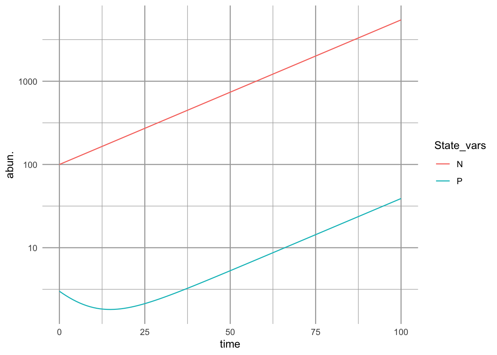
If we plot these in state space, we get Figure 10.2.
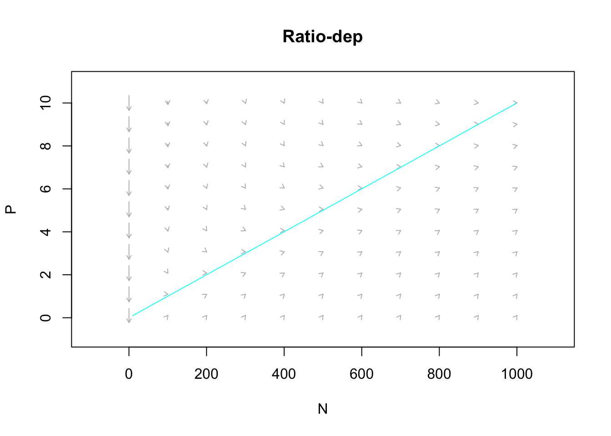
Exercise Calculate by hand the equilibrium abundance of predators in the above model.
10.2 Prey dependence
A more widely used model of predator-prey dynamics is that championed independently by Alfred Lotka and Vito Volterra. In this formulation, the per predator capture rate depends only on the prey abundance, not on the ratio of prey to predators. We refer to this as “mass effects”, where, as is often the case in chemical reactions, the rate of reaction depends merely on the concentration of the reactants. Molecules of each reactant do not interfere with each other. Organisms are not always so chill. Nonetheless, it is a widely used, and often reasonable, approximation of enemy–victim interactions, especially at low densities of enemies.
When capture rate is independent of the number of other predators in the population, we describe it thus. \[\begin{align} \dot{N} &= bN-dN - aNP = rN - aNP\\ \dot{P} &= eaNP - mP \end{align}\] Here the per predator capture rate is simply \(aN\). Therefore, the units of \(a\) differ from the ratio-dependent model.
Given that \(aNP\) must have units of prey per unit time, what must the units of \(a\) be? Can you express them in a biologically meaningful way?
We find equilibria, or more correctly, zero net growth isoclines, by setting \(\frac{P}{dt} = 0\) and \(\frac{dN}{dt}=0\). When we do this we get curious results.
Predator isocline \(\frac{dP}{dt} = 0 \implies N=\frac{m}{ea}\)
Prey isocline \(\frac{dN}{dt} = 0 \implies P=\frac{r}{a}\)
Each population’s growth rate is zero when the other population is at a fixed value. More on this when we deal with dynamics next.
10.2.1 Dyanmics of prey-dependent predation
Now let’s code a numerical model of prey-dependent, or Lotka-Volterra, predation.
cr_prey_dep_pred <- function(time, y, parameters){
# the populations
N <- y[1]; P <- y[2]
with(as.list(parameters),{
# the equations
dndt <- r*N - a*N*P
dpdt <- e*a*N*P - m*P
# returning a list with one component that is
# a two element vector, c(rate1, rate2)
return(list(c(dndt, dpdt)))
})
}Now we run this model, using the same parameters as for ratio-dependent predation, and plot the output.
t <- 0:200; y0 <-c(N=100, P=3)
p <- list(r=0.05, a=0.01, e=0.1, m=.1)
outdf <- as.data.frame( ode(y0, t, cr_prey_dep_pred, p) )
outL <- pivot_longer(outdf, -time, names_to="State_vars", values_to="abun.")
ggplot(outL, aes(time, abun., colour=State_vars)) + geom_line()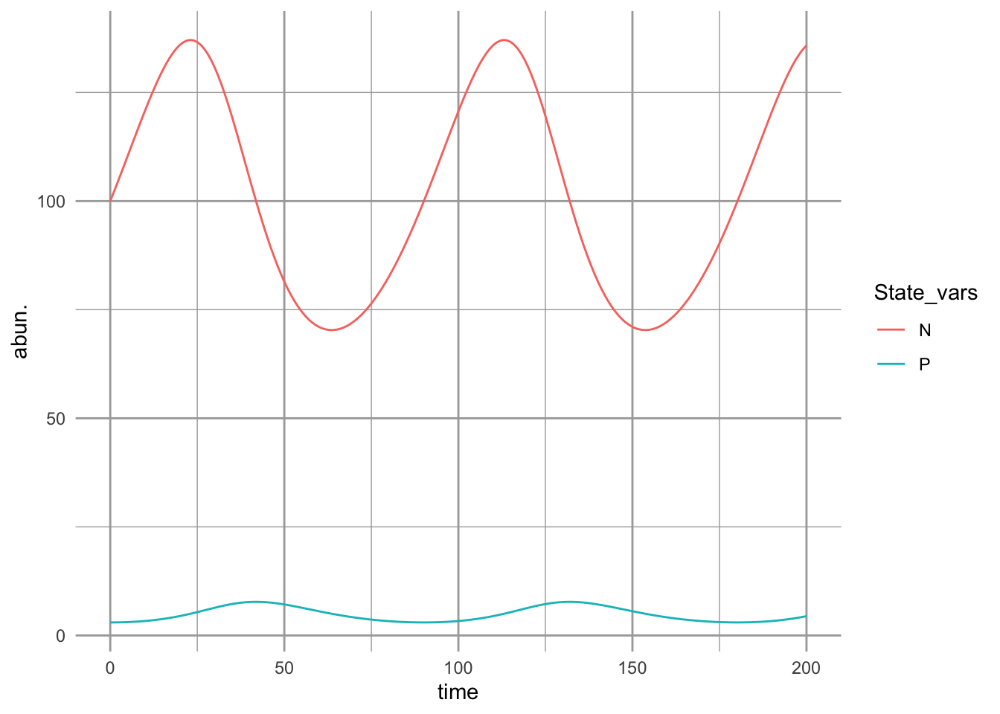
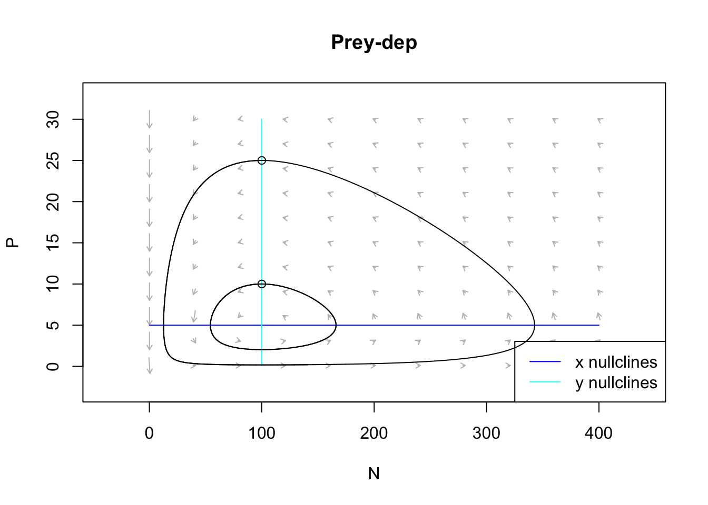
Think about these isoclines for a bit. Under what conditions does the prey increase (arrows pointing right)? Under what conditions does the prey decrease (arrows pointing left)? This shows us that the prey increase whenever the predator abundance is below a certain value. We found that value above, and it is \(P = r/a\). When does the predator increase or decrease? When the prey is above or below a particular value, \(N=m/(ea)\).
The only time these populations are at rest is when both of these are true.
10.3 Interlude: Functional response - what an individual predator does
We refer to the per predator kill rate as the functional response. It is the response of a predator to different levels of \(N\) and \(P\). The functional response of the above ratio-dependent model is \(aN/P\), and for the prey-dependent model it is \(aN\) (Figure 10.3). We refer to these as type I functional responses.
Are these type I functional responses realistic? They both imply that a predator captures a constant fraction of available prey, no matter how many prey there are. It predicts that regardless whether there are two prey individuals or one gazillion prey, a single predator can nonetheless capture the same fraction. So, if prey reach high densities, then type I functional responses are not realistic. However, if prey never reach high densities, then type I is reasonable within the bounds of realized prey densities.
A more realistic functional response assumes that the predator satiates, that is, where the capture rate approaches a plateau as the density of prey increases. After all, a predator has to catch, subdue, and kill a prey item, swallow it, and then move on. Optimal foraging models (Chapter 3) typically account for this. Ecologists refer to this activity as “handling” and the time required to do that as handling time. Buzz Holling (1959) developed a mathematical form for a functional response with prey-dependent predation that includes handling time: \[\frac{aN}{1+ahN}\] where \(a\) is attack rate, and \(h\) is handling time. We refer to this functional response as a type II functional response (Figure 10.3). As \(N\) gets really big, this fraction approaches \(1/h\), \[\lim_{N \rightarrow \infty} \frac{aN}{1+ahN} = \frac{1}{h}\]
If this2 is not yet clear why this should be, pause and reflect on it.
2 This being “the limit, as N approaches infinity, of ‘a N over one plus a h N’ equals one over h.”
We can do the same exercise using the ratio, \(N/P\), \[\lim_{N/P \rightarrow \infty} \frac{aN/P}{1+ahN/P} = \frac{1}{h}\]
Another very common way to represent the same type II response is the formulation for Michaelis-Menten enzyme kinetics, \[m \frac{N}{k+N}\] where \(k\) is the half-saturation constant, and \(m\) is the maximum rate. The half saturation constant is the value of \(N\) that results in a reaction rate or killing rate that is half the maximum, \(m\). Algebraic rearrangement between the Holling type II and the Michaelis-Menten type II formulations would show that \(m=1/h\) and \(k=1/(ah)\).3 You might try that to convince yourself it is true.
3 m is the maximum killing rate; note that as h declines, m increases.
Sometimes predators don’t feed a lot until there are enough prey available. Sometimes this is due to predators switching from one prey type to another once the other becomes sufficiently common. A predator may develop a search image for a prey type, and ignore others. We’ve all known people like that. We represent this via an exponent (\(z>1\)) in our functional response, \[\frac{aN^z}{1+ahN^z}\] where \(z>1\) and we refer to this as a type III functional response.
par(mgp=c(0,1,1))
curve(1*x, 0, 2.5, ylab=bquote("no. prey (or prey/predator) killed\nper predator per time"),
xlab="N or N/P", axes=FALSE, main="Functional Responses")
box()
curve(x/(1+x), add=TRUE, lty=2 )
curve(x^3/(1+x^3), add=TRUE, lty=3 )
text(2.5, 2, "Type I", adj=1)
text(2.5, 1, "Type III", adj=1)
text(2.5, .6, "Type II", adj=1)
par(mgp=c(0,1,1))
curve(x/x, 0, 2.5, ylab=bquote("no. prey (or prey/predator) killed\nper predator per time"), ylim=c(0, 1.1),
xlab="N or N/P", axes=FALSE, main="Functional Responses")
box()
curve(x/(1+x)/x, add=TRUE, lty=2 )
curve(x^3/(1+x^3)/x, add=TRUE, lty=3 )
text(1, 1.05, "Type I")
text(0.6, .7, "Type II", adj=0)
text(0, .1, "Type III", adj=0)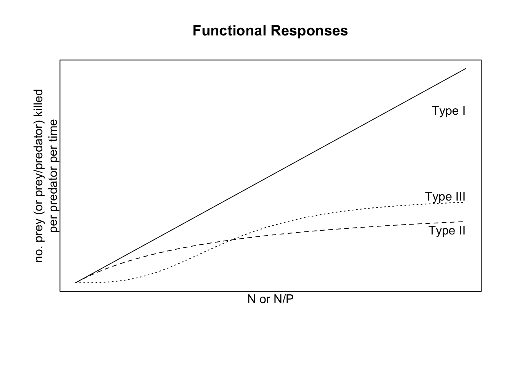
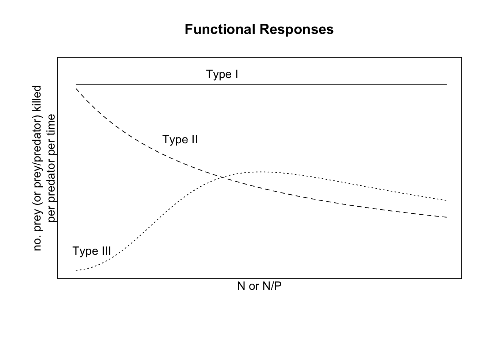
If we ever want to use data to ask about the behavior of a predator, it can be very difficult to distinguish between these foraging behaviors by fitting data to functional response curves. We typically have more success fitting data of kill rate per unit prey vs. prey density (Figure 10.3) because there are qualitative differences in slope (negative vs. positive) at low prey density (Juliano 2001).
Prey- vs. ratio-dependent functional responses
Some empirical evidence suggests that partial ratio-dependence may often represent what is happening in nature (Arditi and Ginzburg 2012). We can get this by introducing an additional constant, \(m\), in our type II functional response: \[\frac{aN/P^m}{1+ahN/P^m}\] where \(0\le m \le 1\). When \(m=0\), we have a prey-dependent response, and when \(m=1\) we have a purely ratio-dependent response.
The numerical response of the predator is simply the how population growth rate varies with \(N\), or \(dP/dt\) vs. \(N\).
10.4 Stability analysis for the prey-dependent Lotka–Volterra model
In this section, we will perform the necessary analytical work to understand the dynamics of Lotka–Volterra predator–prey dynamics, and we follow this up with a peek at the time series dynamics to confirm our understanding based on the analytical work.
As before for competition, we follow four steps: determine equilibria, create the Jacobian matrix, and solve and use the Jacobian.
Lotka–Volterra equilibrium
All we have to do is to solve the isoclines for where they cross. Thus we could set these equations equal to each other. It turns out, however, that the isoclines were just straight lines, so we see that the equilibrium is at \((m/(ea), r/a)\).
If you haven’t already, set growth rates equal to zero and solve for these isoclines.
Creating, solving and using the Jacobian matrix
Take a look at the growth equations again. Here we take the partial derivatives of these because we want to know how each population growth rate changes in response to changes in the abundance each of the other population. The partial derivatives of the prey growth equation, with respect to itself and to the predator, go into the first row of the matrix, whereas the partial derivatives of the predator growth rate, with respect to the herbivore and itself go into the second row.4
4 A partial derivative is just a derivative of a derivative with respect to one of the state variables.
Just for kicks, you might try deriving these partial derivatives, e.g., \(\frac{\delta dN/dt}{\delta N}\), where for this example, we treat \(N\) as the variable and \(P\) as a constant. \[ \begin{aligned} \left( \begin {array}{cc} \frac{\partial \dot{N}}{\partial N}&\frac{\partial \dot{N}}{\partial P}\\ \frac{\partial \dot{P}}{\partial N}&\frac{\partial \dot{P}}{\partial P} \end {array} \right) = \left( \begin {array}{cc} r-aP & -aN\\ eaP & eaN-m\\ \end {array} \right) \end{aligned} \tag{10.1}\]
We can replace the \(P\) and \(N\) in the Jacobian with the equibria found above. When we do this, we get
\[ \begin{aligned} \left( \begin {array}{cc} r-a(r/a)&-a(m/(ae))\\ ea(r/a)&ea(m/(ae))-m\\ \end {array} \right) = \left( \begin {array}{cc} 0 & - m/e \\ er & 0 \\ \end {array} \right). \end{aligned} \tag{10.2}\]
Typically a system will be more stable if the diagonal elements are more negative than the off-diagonals are postive — that would mean that each population is self regulating, and it corresponds to the Routh-Hurwitz criterion (see the competition chapter for an earlier use of the Routh-Hurwitz criteria). \[ \mathbf{J_{11}} + \mathbf{J_{22}} < 0. \tag{10.3}\] We notice that in Equation 10.2 these diagonal elements are both zero. These zeroes reveal that there is no negative density dependence within each population, that is, no self-regulation.
The other part of the Routh-Hurwitz criteria is the condition, \[ \mathbf{J_{11}}\mathbf{J_{22}-\mathbf{J_{12}}\mathbf{J_{21}}} > 0. \tag{10.4}\] In the predator–prey context, this suggests that the herbivore declines due to the predator (\(\mathbf{J_{12}}<0\)) and the predator increases due to the herbivore (\(\mathbf{J_{21}}>0\)). The signs of these elements make their product negative, and help make the above condition true. Note that because \(\mathbf{J_{11}} \mathbf{J_{22}} =0\), this condition reduces to \(-rm>0\). Thus it seems that this will cannot be true as along as both \(r\) and \(m\) are positive (which we have defined as the case). Therefore, this dynamic will not have a stable equilibrium.
We can perform eigenanalysis given the parameters above.
# our parameters are inside the list called 'p', so we use 'with()'
Jac <- with( p, matrix( c(0, -m/e, e*r, 0), byrow=TRUE, nr=2) )
eigen(Jac)[["values"]][1] 0+0.07071068i 0-0.07071068iWe find that the eigenvalues are complex, and real real parts are not less than zero. Because they are complex, this means that the populations will oscillate or cycle, with period \(2\pi/\omega\) (see Chapter 8). Because the real parts are zero, this means that the Lotka–Volterra predator–prey exhibits neutral stability. Recall that neutral stability is the “in-between” case where perturbations at the equilibrium neither grow nor decline over time. They merely change the abundances but cause no response.
Here we come to an important distinction: the simple ratio dependent predation model predicts no oscillations, whereas the simple prey-dependent predation model predictions that oscillations are inherent in predator-prey interactions. Which of these ideas provides a more useful base from which to understand predator-prey dynamics depends on the system, and on who you talk to.
10.5 Resource growth functions
Up until now, we have assumed that the resource grows exponentially in the absence of a consumer. This is the essential starting point, and now we add two simple extensions, logistic growth, and saturating resource supply.
When the resource is a biotic population, it is typical to represent their growth function with logistic growth, such as \[\frac{dN}{dt}=rN\left( 1-\alpha N \right)\] or to use \(N/K\) in place of \(\alpha N\).
When the resource is an inorganic molecule, such as nitrate or phosphate in soil solution or in an aquatic habitat, we often assume a constant background supply rate \(S\) (Tilman 1982) in the absence of consumption. We can imagine that this background supply rate results from microbial activities that are little affected by the growth of the single species we are describing. We further imagine that this is inhibited by the availability of the the resource \(R\), so that, in the absence of consumption, the actual resource supply rate is \[\frac{dR}{dt} = r(S-R)\] where \(r\) is resource renewal rate (not intrinsic rate of increase). The units of \(r\) here are \(1/t\) or perhaps we can think of it as \[\frac{\mathrm{resource~produced}}{\mathrm{resource~present}} \cdot \frac{1}{t}=t^{-1}\] As the amount of \(R\) increases, \(dR/dt\) decreases. In a sense, it bears some resemblance to logistic growth, where \(S=K\) and \(R=N\). Next we explore this model in some detail.
10.5.1 Consumption of a renewable resource
Consider one of the simplest models of consumer-resource interactions, \[\frac{dR}{dt}= r\left(S-R\right) - aN R\] \[\frac{dN}{dt}= N\left(eaR - d\right)\]
where \(a\) is the per capita feeding rate of a consumer on a resource, \(e\) is the efficiency with which a consumer converts a unit of resource into new biomass, and \(d\) is the per capita death rate of consumers. The fixed parameter \(S\) is the background supply rate of a resource, and \(r(S-R)\) is the turnover rate of resources that are part of the available \(R\) pool. If the resource is nitrate, perhaps this is determined by nitrifying soil microbes at steady state. This rate declines as the amount of resource grows, or \(r(S-R)\). This is likely to happen when a resource is washed out of the soil, or if a high amount of resource suppresses its production.
Consumers can be measured in mass, such as grams, or per capita. Or perhaps our organisms each weigh one gram.
Let’s start by exploring what happens to the resource when there is consumer \(N=0\). If we solve for \(dR/dt=0=r(S-R)\), we get, \[R^* = S\] and we see that, at this equilibrium (\(N=0\)), the environment will contain \(S\) amount of resource.
As we described above, each unit of consumer reduces a unit of resource by \(a\) units per unit time. We say that the per capita effect of the consumer on the resource is \(a\). The effect of the resource on the consumer is moderated by the assimilation efficiency \(e\), that is, how much the consumer can grow, given its consumption of \(R\). Therefore, the effect of the resource on the consumer is \(ef\).
So the consumer consumes resource and grows, but it also dies. At equilibrium, growth = death, and when this is true, we can solve for per capita growth rate equal to zero. \[\frac{dN}{Ndt} = 0 = efR - d \implies R^* = \frac{d}{ef}\]
We refer to this equilibrium as “R-star”, and it plays a central role in competition theory. More on it in a moment.
If we set \(dR/dt=0\) and substitute \(R^*\) in for \(R\), we find that the the consumer population will be \[N^* = \frac{r\left(S - d/(ea)\right)}{a(d/(ea)}=r\left(S\frac{e}{d}-\frac{1}{a} \right)\]
From this we can say that the environment must supply the resource at a rate of at least \(S>d/(ea)\) to allow species \(N\) to persist. In addition, the per capita effect of the consumer on the entire resource pool at equilibrium is \(aR^* =d/e\).
Here we make an R function of these populations.
cr_plant <- function(t,y,p){
N <- y[1]; R <- y[2]
with(as.list(p),{
dN <- N*(e*a*R - d)
dR <- r*(S-R) - a*R*N
return(list(c(dN,dR)))
} )
}If we select parameter values, we can find \(R^*\) and \(N^*\).
p <- c(e=.1, a=1, d=.1, r=2, S=2)
with(as.list(p),{
R.star = d/(e*a)
N.star = r*(S*e/d - 1/a)
return(c(R.star, N.star))
})[1] 1 2We can also plot the dynamics.
t <- seq(0, 100, by=1)
out <- ode(y=c(N=1.5, R=2), times=t, func=cr_plant, parms=p)
outdf <- out %>% as.data.frame() %>% pivot_longer(cols=!time, names_to="population", values_to="value")
qplot(time, value, col=population, data=outdf, geom="line")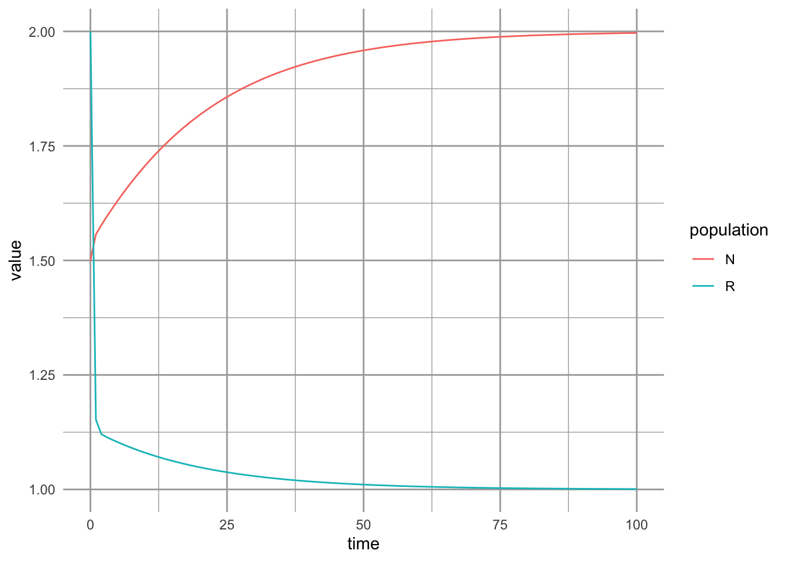
10.5.2 Prey carrying capacity and type II functional response
The most commonly used predator-prey models include a carrying capacity for the prey, so the prey population grows logistically. The predator has a nonlinear type II functional response. These are both well-established realistic biological complications This has commonly been attributed to Rosenzweig and MacArthur (1963), and others soon began using similar approaches (May 1973). Here is a common version, which I’ll refer to as our Rosenzweig-MacArthur model, for predator, \(P\), and prey, \(N\): \[\begin{align*} \frac{dN}{dt} &= rN(1-\alpha N) - \frac{aN}{1+ahN}P\\ \frac{dP}{dt} &= e\frac{aN}{1+ahN}P - mP \end{align*}\]
To investigate its dynamics, we can create an ODE function of this consumer-resource model.
cr_RM_pred <- function(time, y, p){
# prey is first, predator is second.
N <- y[1]; P <- y[2]
with(as.list(p), {
Ndot <- r*N*(1-alpha*N) - a*N*P/(1+a*h*N) # prey
Pdot <- e*a*N*P/(1+a*h*N) - m*P # predator
return(list(c(Ndot, Pdot)))
})
}t <- 0:100; y0 <-c(N=100, P=3)
p <- list(r=0.8, alpha=0.001, a=.02, e=0.04, m=.15, h=.1)
outdf <- as.data.frame( ode(y0, t, cr_RM_pred, p) )
outL <- pivot_longer(outdf, -time, names_to="State_vars", values_to="abun.")
ggplot(outL, aes(time, abun., colour=State_vars)) + geom_line()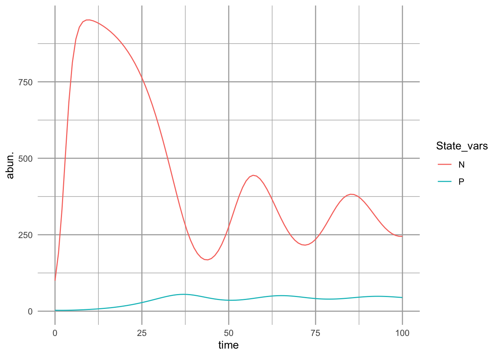
If we plot the isoclines, we can see the dynamical phase plane more clearly.
## This use the phaseR package to plot phase planes
## for 1-D and 2-D systems
ppp.flowfield <- flowField(cr_RM_pred, xlim = c(0.1, 1000),
ylim = c(0.1,80),
parameters = p, points = 11,
add=FALSE, ylab="P", xlab="N",
main="Rosenzweig-MacArthur")
## ZNGIs
ppp.nullclines <- nullclines(cr_RM_pred, xlim = c(.1,1000),
ylim = c(.1,80),
parameters = p, add.legend = FALSE)
y0 <- matrix(c(100, 25, 100, 10), nc=2, byrow = TRUE)
## Dynamics
prey_trajectory <- trajectory(cr_RM_pred, y0 = y0,
parameters=p,
tlim = c(0, 200))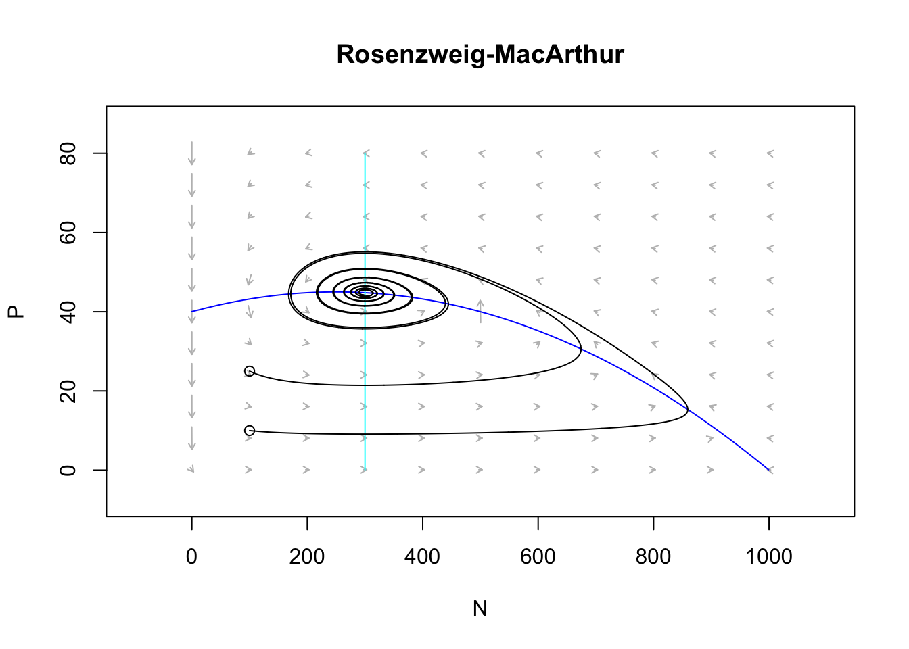
eq <- findEquilibrium(cr_RM_pred, y0=c(300,40), parameters=p)$ystarThe stable equilibrium occurs at approximately 300, 45.
10.6 Paradox of enrichment
Using a variety of models that assume a prey carrying capacity and a type II functional response, Rosenzweig (1971) showed an unexpected phenomenon — that increasing a prey’s carry capacity could drive it to extinction. This can happen if the prey grow too quickly to high abundance and temporarily support a high abundance of predators which then drive the prey extinct. We can demonstrate that here by lowering \(\alpha\) enough to increase oscillations so that abundances get infinitesimally close to zero.
t <- 0:200; y0 <-c(N=100, P=3)
p <- list(r=0.8, alpha=0.0005, a=.02, e=0.04, m=.15, h=.1)
outdf <- as.data.frame( ode(y0, t, cr_RM_pred, p) )
outL <- pivot_longer(outdf, -time, names_to="State_vars", values_to="abun.")
ggplot(outL, aes(time, abun., colour=State_vars)) + geom_line()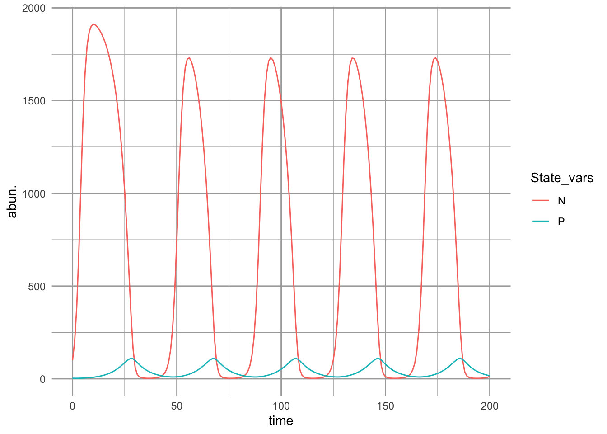
Try replicating the phase plane plot used above with these new parameters.
10.7 Consumption of two resources
In this section, we work through an example of a species that depends on two resources. For simplicity, we will assume that the resources are substitutable, that is, a shortage of one can be made up for with an excess of another.
Consider a plant, \(N\), that can consume two substitutable resources ammonium (\(R_1=\)NH\(_4^+\)) and nitrate (\(R2=\)NO\(_3^-\)). One could just as easily imagine tadpoles that feed on zooplankton and periphyton, fish that feed on macroinvertebrates and periphyton, or wolves that feed on lemmings and caribou. All parameters have the same meanings as above (\(e\)-efficiency, \(a\)-consumption, \(d\)-mortality, \(r\)-resource renewal, \(S\)-supply).
\[\frac{dN}{dt}= N\left(e_{1} a_{1} R_1 + e_{2} a_{2} R_2 - d\right)\] \[\frac{dR_1}{dt}= r_1\left(S-R_1\right) - a_{1}N R_1\] \[\frac{dR_2}{dt}= r_2\left(S-R_2\right) - a_{2}NR_2\] The growth rate of our plant depends on the concentrations of both resources.
The ODE function we can write looks like this:
cr_1substitutable <- function(t, y, parameters){
# consumption by 1 consumer of two substitutable resources
N <- y[1] ; R1 <- y[2]; R2 <- y[3];
with(as.list(parameters), {
N.dot <- N * ( e1*a1*R1 + e2*a2*R2 - d )
R1.dot <- r1 * (S1 - R1) - a1*N*R1
R2.dot <- r2 * (S2 - R2) - a2*N*R2
return( list(c(N.dot,R1.dot, R2.dot)) )
} )
}parameters <- list(
# the environment supplies resources at these rates
r1 = .5, r2=.5, S1=3, S2=3,
# consumption rates
a1=1, a2=0.5,
# assimilation efficiencies
e1=.1, e2=.1,
# death rate
d=.1
)
t <- seq(0, 50, by=.1)
y.init <- c(N=.5, R1=.1, R2=2)
out <- ode(y = y.init, times=t, func=cr_1substitutable,
parms=parameters)
outL <- out %>% as.data.frame() %>%
pivot_longer(cols=-time, names_to="State.vars", values_to="Abun")
ggplot(outL, aes(x=time, y=Abun, colour=State.vars)) + geom_line()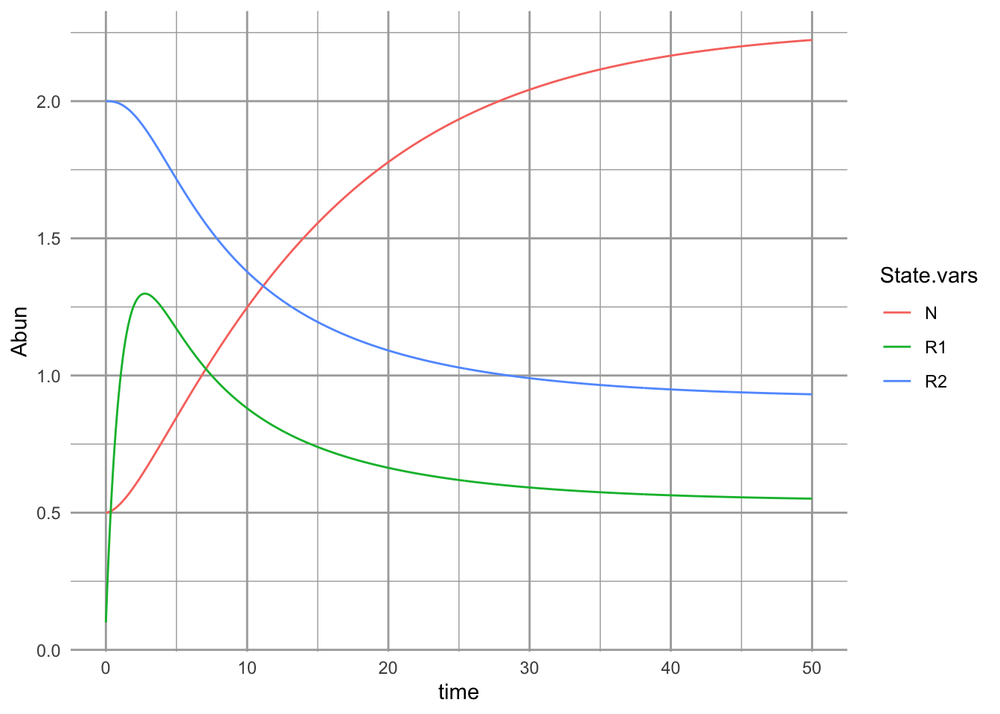
We can solve \(dN/dt=0\), and get the combinations of resource concentrations to result at equilibrium when the plant rate of increase matchs the loss rate: \[R_2 = \frac{d}{e_2 a_2} -\frac{e_1 a_1}{e_2 a_2}R_1\] where it takes the form of a straight line \[y = \mathrm{intercept} + \mathrm{slope}\cdot x\] with \(R_2=y\) and \(R_1=x\). We graph this below, and include the effect of the consumer on the resources (solid arrows, Figure 10.4). The total per capita consumption rate is the vector derived from the separate feeding rates \(a_1\) and \(a2\), times consumer abundance, \(N\). We also show the effect of resource renewal (dashed arrows, Figure 10.4). This is what would happen to resources if the consumer were eliminated. We are most often interested in these vector at the equilibria, \(N^*\), and they depend on the resource supply rates \(S_1\), \(S_2\).
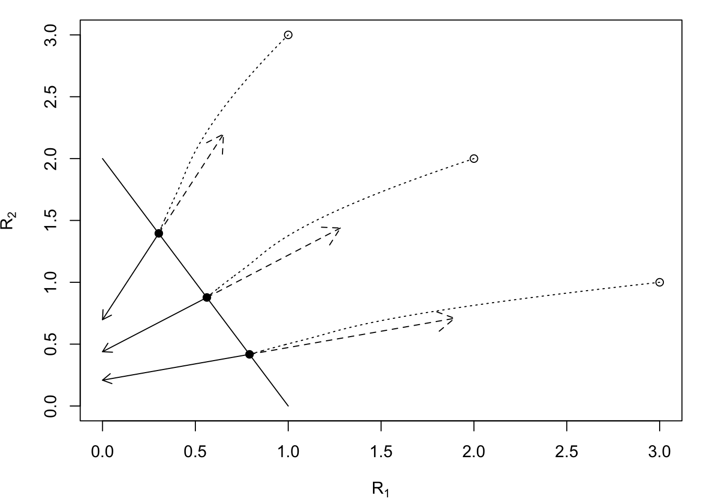
10.7.1 Interpreting consumption and assimilation
On one hand, a higher consumption rate, \(a\), means that an organism consumes more of that resource. On the other hand however, it means that a reduction in that resource has a larger negative effect on the consumer. The same is true for assimilation efficiencies, \(e\). Being more efficient at converting a resource to biomass also means that a reduction in that resource represents a greater reduction in growth rate.
Evolution has often resulted in adaptations that allow organisms to consume relatively more of resources that they need more of. One reason that an organism needs more of one resource than another is because of its stoichiometric composition (Sterner et al. 2002). For instance, a plant species root, stem, and leaf tissue has a higher C:N ratio might have a relatively higher carbon or light requirement and a relatively lower nitrogen requirement than a species with a lower C:N ratio, such as an herbivore. A plant is likely to have adaptions that allow them to acquire relatively more carbon and survive on less nitrogen than the other species.
As a result of species’ stoichiometric composition, we can hypothesize a that species with relatively higher tissue concentration of \(R_1\) will have higher consumption rate, \(a_1\), than a species with a relatively lower \(R_1\) tissue concentration.
Our population, \(N\), is consuming resources in the ratio \(a_2 R_2 / a_1 R_1\), and developing new biomass and individuals in the ratio \(e_2 a_2 R_2 / e_1 a_1 R_1\). This can be a useful approximation of reality. It would be logical, but far from guaranteed, that the organism’s requirements for growth or metabolism are of a similar ratio. Otherwise, they must store or excrete what they do not use. Thus we can consider \[\frac{e_2 a_2 R_2^*}{e_1 a_1 R_1^*}\] as a resource ratio requirement.
10.8 In fine
So that is what is involved with simple consumer-resource interactions. Resources renew, consumers consume and grow inefficiently, and the environment influences those processes. There are a variety of ways to represent resource renewal, and consumption. Consumption, as attack rate or feeding rate, is the effect of the consumer on the resource, and is illustrated with the functional response.
In later chapters, we describe different types of enemy-victim relations including host-parasitoid and disease dynamics, and consequences of competition and mutualism that emerge when consumers interact via shared resources.